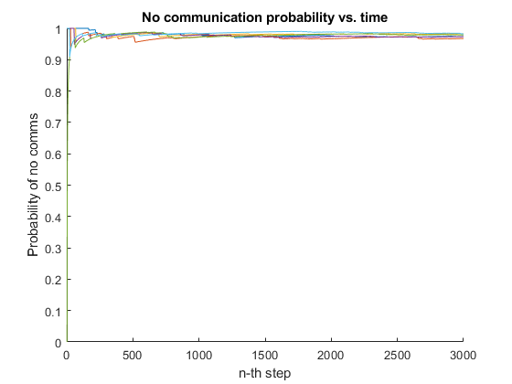

Contents
Simple Communication at Opportunity Sim
By: Patrick Ledzian Date: 23 March 2022
% Algorithm Outline % - [DONE] initialize agents w/ initial positions % - [DONE] initialize heading w/ test for feasability % - [DONE] iterate all paths simultaneously in nT % -- [DONE] generate distance matrix from vector of agent positions % --- [DONE] check for sufficient closeness % ---- [DONE] if close populate an adjacency matrix % -- [DONE] check if inside bounding box % --- [DONE] if not, assign new random heading % % - [DONE] after all sim iterations complete, gen dist matrix for each itr % - [DONE] average the multi-start adjacency matrix against start itrs % TODO: ***build out SimAnalysis class and run various instances of that w/ % nice MATLAB formatting and create pdf doc *** % TODO: approx 1 in 5k times the agent path will leave boundaries... % TODO: plot the averaged plotSimStepDistanceComms over multi-start itrs % [NOT SURE IF THIS TELLS ME ANYTHING NEW] % TODO: find min, max, ave, and variance for a sim (use multi-start % results) % TODO: find the oldest comms and which agent has it % TODO: visualize graph dynamics over a single run % TODO: find Markov Decision Process that represents different #-agent % cases for fixed boundaries % TODO: explore using Jacobian to alter distribution of random heading % angles % TODO: find some tie-in with a "free-space" sort-of metric % TODO: generalize for any symmetric convex shape % TODO: generalize for any convex shape, including asymmetric ones % Version 2.0 % track the adjacent quadrants of each agent (function of communication % distance) and only perform 2-norm calculations between agents in the % adjacent quadrants. Will need to discretize the map. This may run faster % for a large number of agents.
Run the simulation
close all clear all clc bounds = [0 20; 0 20]; %testSim = MultiAgentSim(bounds, 4, 240, 1000); % boundary vertices; n agents; steps in sim; num sims % runSim() parameters -- (1/0; yes/no); % 1) plot graphs; triangle is init pos / square is end pos % 2) generate distance matrix for each step of a single sim iteration % 3) generate distance matrix for each iteration of the multi-start and average all % 4) plot communication cumulative ave for single simulation case %testSim.runSim(1,0,1,0); % 2&4 run together, can't run with 3 a = SimAnalysis(); a.steadyStateCommProb(bounds, 4, 3000, 1); disp('Done')
Done
Test simulation modules
%n = 10000; % number of times to run sim %bounds = [0 20; 0 20]; % vertices of the simulation space % %checkInitPosGen(n, bounds, rounding); % sim iterations, convex polygon vertices, %checkHeadAngGen(n, rounding);